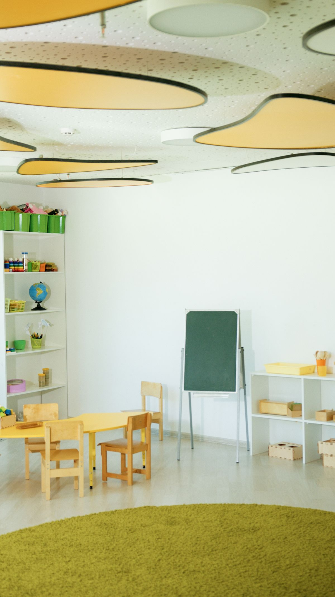
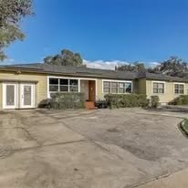

Infant care
Full-time and part-time infant care.
Full-time and part-time infant, toddler, and preschool care in Tampa, with before- and after-school care, food served, and transportation.
Full-time and part-time infant care.
Full-time and part-time toddler care.
Full-time and part-time preschool care.
Before- and after-school care.
Food is served.
Transportation is available.
A licensed center with capacity for 88 children.


One photo is a real photo of the business: the pale yellow Park A Tot building under a blue sky. The other two are labeled stock photos: a bright, empty classroom with wooden tables and chairs, toy shelves, a blank chalkboard, and a green rug, and two young children kneeling on the floor playing with a tall stack of colorful wooden blocks and toy animals. They show the kind of daycare setting described on this page, not this business.
Park A Tot Day Care Center serves Tampa, FL. Questions? Call (813) 877-3478.